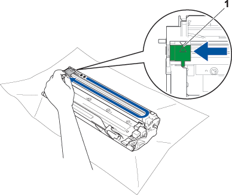

- 1
-
Otevřete kryty.

- 2
-
Vyjměte sestavu fotoválce ze zařízení.

- 3
-
Vyměňte tonerovou kazetu.

- 4
-
Posuňte zelený jezdec na fotoválci 3krát ze strany na stranu.
Nezapomeňte umístit jezdec zpět do výchozí polohy (1).
- 5
-
Vložte sestavu fotoválce zpět do zařízení a zavřete kryty.